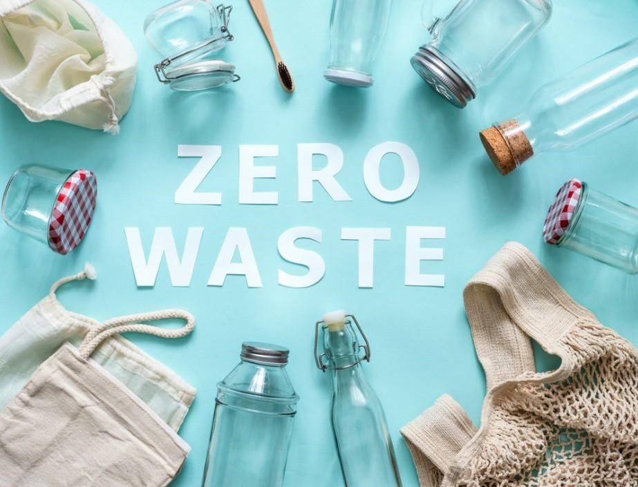
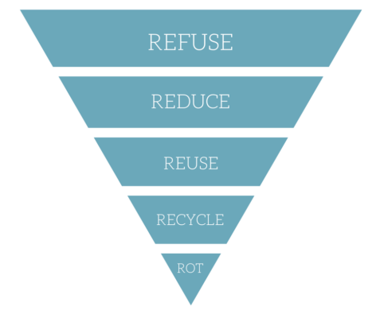

Принцип Zero waste - нуль відходів
 Zero Waste (дослівно «нуль відходів») - це концепція, основною ідеєю якої є скорочення кількості виробленого нами сміття шляхом використання багаторазових предметів і речей, подібно до того, як вони б використовувалися в природі. Мета полягає в тому, щоб сміття не потрапляв на смітник або на сміттєспалювальний завод.
Це моральна, економічна, ефективна і глобальна мета, спрямована на зміну способу життя людей і створення стійких природних циклів, де всі надлишкові матеріали можуть стати ресурсами, а не сміттям.
З кожним днем всесвітня гора сміття зростає, і гора ця практично не має терміну розпаду. Вона губить тварин і мешканців океанів, згубно відбивається на нашому здоров'ї. Крім того, ресурси планети стрімко зменшуються.
Нуль Відходів починається з відмови від непотрібних речей. Використовуйте речі, які у вас вже є, щоб зменшити споживання і берегти ресурси. Замініть всі одноразове предметами, які можна використовувати повторно, а замість того, щоб викидати речі, ремонтуйте їх!
Як працює Zero waste - правило 5R.
Концепція Zero Waste складається в п'яти простих правилах:
- Refuse - Відмова
- Reduce - Зменшення споживання
- Reuse + Repair - Повторне використання і Ремонт
- Recycle - Переробка
- Rot - Компостування
Відмова
Перше правило Zero Waste - щоб уникнути сміття, не купуй його. В першу чергу це означає, що варто робити покупки обдумано, щоб непотрібна річ згодом не виявилася в сміттєвому баку. Саме тому концепція безвідходності так тісно пов'язана з мінімалізмом - ти не купуєш непотрібне-ні шкодиш планеті-маєш свободу від непотрібних речей і більше часу для головного.
Відмова від непотрібного позбавить вас від більшості сміття. На цьому етапі дуже важливо навчитися говорити «ні».
Зменшення споживання
Зменшити неконтрольоване споживання товарів, щоб не позбуватися від них через якийсь час.
У багатьох вдома є речі, які ніколи не використовуються. Деякі з них навіть не розпаковували! Чому це відбувається? Всьому виною імпульсивні покупки. Ми щось побачили, нам це сподобалося, і все, ми це купили! Але найчастіше радість від покупки проходить дуже швидко, а сам товар стає ще одним предметів нашому будинку, яка не додає ніякої цінності для нашого життя.
Повторне використання і Ремонт
Варто раз і назавжди усвідомити, що одноразові засоби ви повинні купувати їх знову і знову. Це, в свою чергу, означає, що ви витрачаєте гроші на те, що ви викинете. Це все одно, що відразу виброіть гроші в сміття! Ця дія, хоча б, матиме менший вуглецевий слід, ніж виробництво одноразового пластику.
Придбана річ повинна служити довго і підходити для різних цілей. І в ідеалі, коли вона зноситься, виробник прийме її на переробку. А якщо річ просто перестане бути потрібною - її можна віддати іншим людям.
Купуйте речі в секонд хендах або з рук на інтернет площалка і пам'ятайте: багатьма речами, вам навіть не потрібно володіти, їх можна взяти в оренду (наприклад, одяг для заходів, книги, товари для спорту і відпочинку, інструменти або навіть автомобілі.
Якщо щось зламається, полагодите це самостійно або віддайте в ремонт, якщо це можливо.
Переробка
Цей пункт стоїть на четвертому місці, а не на першому, тому що вторинна переробка не порятунок від усіх проблем.
Проблема в тому, що лише частина відходів вийде переробити в настільки ж цінний продукт. Наприклад, пластиковий лом піде тільки на будматеріали, а вони після використання відправляться на смітник. У багатьох випадках переробка лише ненадовго продовжує життєвий цикл речей, а в підсумку вони все одно опиняються в купі сміття або на сміттєспалювальному заводі.
Проте, обов'язково відсортуйте своє сміття, щоб ці ресурси можна було повторно використовувати, а не відправити на смітник.
Компостування
Органічні відходи складають третину всього побутового сміття, і саме через них багатьом доводиться щодня виносити відро. Але навіть очисткам і недогризкам можна знайти застосування. За допомогою домашнього компостера вони перетворюються в корисне добриво для рослин. Крім цього є діспоузер - електричний прилад, який продрібнює органічні відходи прямо під раковиною. Вони надходять в каналізацію, а на очисних спорудах з них роблять біогаз.
Органічне сміття може бути перетворений в корисне добриво для рослин, замість того, щоб просто гнити на звалищі.
Як дотримуватися принципу 0 відходів
10 правил, завдяки яким можна зменшити кількість відходів вдома.
Базові принципи та звички.
Чи є життя без одноразових речей?
Як та чим можна замінити звичні одноразові речі на багаторазові.
Сортування сміття
Інструкція як почати сортувати сміття та на що важливо звертати увагу.
Види і типи пластику.
Сміттєве відро більше не потрібне
Як перестати користуватися сміттєвим відром? Компостування харчових відходів вдома без неприємного запаху.
Як прибрати пластикові пакети зі свого життя
Якої шкоди завдають пластикові пакети природі.
Інструкція: чим можна замінити пакети.